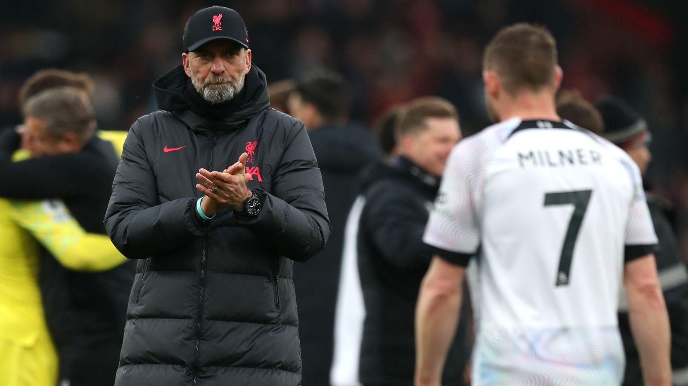
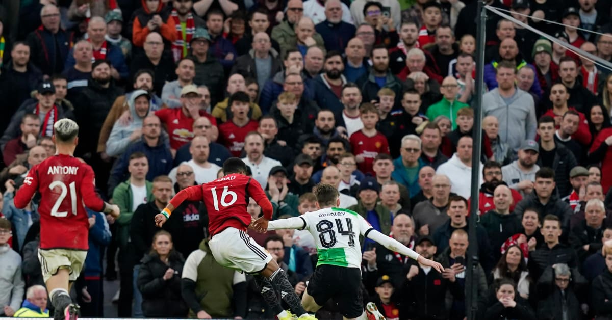
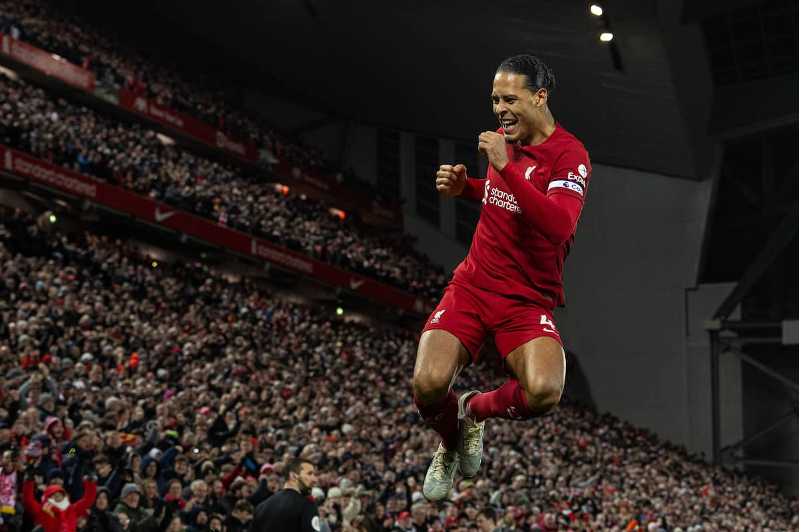
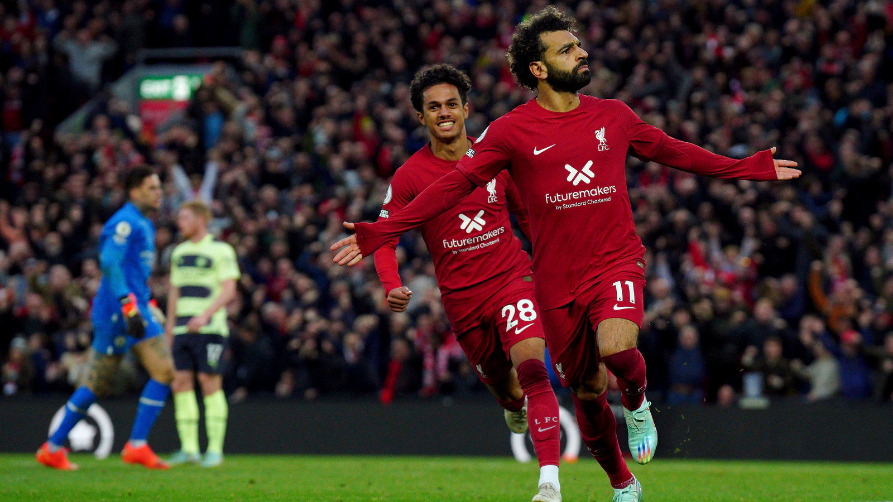

Latest News

Jurgen Kloop's shocking press conference
Jurgen Kloop announces his departure from the club at the end of the season 2023-24.
Read Full Story

Liverpool is beaten at Old Trafford
A shocking scenery. Liverpool loses the FA Cup quarter-final against Manchester United.
Read Full Story

The Wall
Liverpool hasn't lost a single home game with Virgil Van Dijk in the starting 11.
Read Full Story

Another record beaten
In 7 consecutive seasons Mohamed Salah scored 20+ goals in all competitions.
Read Full Story